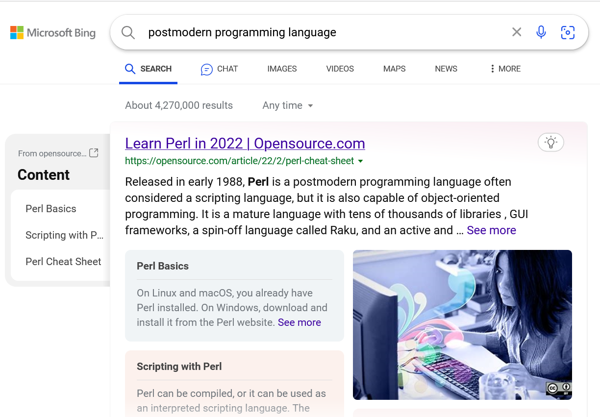
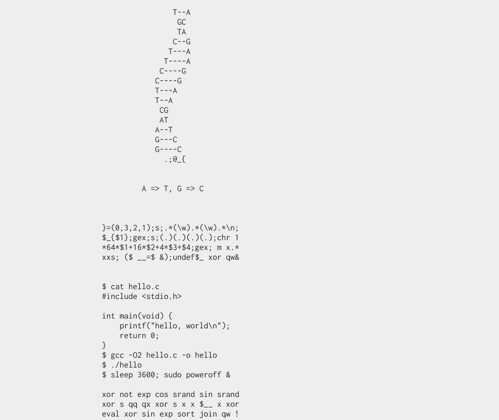

title: 后现代编程语言介绍 date: 2023-10-01 17:48:39
tags:
后现代编程语言介绍
什么叫后现代编程语言？
你猜？

预览
- Perl 历史
- Perl 设计理念：TIMTOWTDI
- TIMTOWTDI 的范式
- TIMTOWTDI 的语法
- Perl 很方便
- You GUESS？
- PCRE
- Perl 的不知道多少个操作符
- Perl 的缺点
- 鬼畜代码大赏
- JAPH
- Golf
- Poetry
- 我的作品
Perl 历史
应该没人会对 Perl 的历史感兴趣……所以这里就列举几个比较有趣的东西好了。
- Perl 1 发布于 1987 年，比 ANSI-C 还早。这就导致 1998 年发布 Perl 5.005 时提到了一句 “Source code now in ANSI C”。
- Perl 在 1987-1991 四年中发布了 Perl 1 到 Perl 4 四个版本。但是 1993 年发布了 Perl 5 之后，大版本号就再也没变过了。基本上可以认为，Perl 已经 29 年没发生过大的 breaking change 了。
- Perl 社区几年前试着设计了 Perl 6。结果发现设计出来的东西和 Perl 5 完全是两个东西，于是给它改了个名字叫 “Raku”。
- Perl 7 正在开发！它将会与 Perl 5 兼容。
Perl 设计理念：TIMTOWTDI
There Is More Than One Way To Do It
做一件事不仅有一种方法。
TIMTOWTDI 的范式
有些坏比语言，会限制你 “只能面向对象” 或者 “不要副作用” 之类的，非常不人道！代码一下子就变得难写了！
但是 Perl 非常包容，以下将展示一些合法并且有用的 Perl 代码。
假装我们在写 C
my $acc = 0;
for (my $i = 0; $i < 100; $i++) {
$acc += $i;
}
printf("%d\n", $acc);
假装我们在写 shell script
if ( -d '/var/log/v2ray' ) {
chdir '/var/log/v2ray';
for $file (<*.log>) {
$size = `stat -c %s $file`;
say "size of $file is $size";
}
}
我一天不 new 浑身难受。
use JSON;
my $ds = {
perl => 'yes',
};
sub main {
my $json = new JSON;
my $text = $json->encode($ds);
my $pretty = $json->pretty->encode($ds);
printf("%s\n", $text);
}
main;
我一直是链式调用的粉丝啊
my $say = sub { say join ",", @_ };
my $length = sub { length shift };
my $double = sub { shift() * 2 };
my $add = sub { shift() + shift() };
"hello,world"->$length()->$double()->$add(42)->$say();
我一直是 S-expression 的粉丝啊
use List::Util qw/sum min max first shuffle/;
say
(sum
(min 1, 2, 3, 4, ),
2,
(first
{ $_ > 3 }
(shuffle 4, 5, 6, 8, 2)));
函数要是一等公民
sub compose ($f, $g) {
sub { $f->($g->(@_)) }
}
my $h = compose(
sub ($x) { $x ** 2 },
sub ($x) { $x + 3 },
);
$h->(2)
谁说 sed 和 awk 不是语言？
#!/usr/bin/perl -n
s/^\s+//;s/\s+$//;s/android/harmonyos/g;
#!/usr/bin/perl -a
if ($NR > 10) { print $F[2] }
TIMTOWTDI 的语法
Perl 的语法很灵活的。
一般我们会把 if 写成这样：
if ($ok) { say 'hello'; }
但是这样也是可以的
say 'hello' if $ok;
再邪恶一点
say 'hello' unless not $ok;
一般我们会把函数调用写成这样：
printf("hello, world\n");
但是这样也是可以的，就像 shell 一样
printf "hello, world\n";
也可以不加空格，只要解释器认得出来
printf"hello, world\n";
极大地减少了 typo 数量！
Perl 很方便
除了灵活的语法，Perl 还有一些内置功能，以及约定来简化代码编写
You GUESS？
while (<>) {
chomp;
s/open\s*ai/csdn/gi;
say join "\n", split /\s+/;
}
很多 Perl 函数会把默认的参数与结果放到特殊变量 $_ 里面。所以写 Perl 代码经常写出 “把那什么拿过来，处理一下放到那里” 这样的东西，任务竟然还完成了（
PCRE
大家都爱用的超级正则表达式。
PCRE 全称是 “Perl Compatible Regular Expression”。PCRE 是 BRE/ERE 的超集，而 Perl 本身的正则表达式又是 PCRE 的超集。
Perl 的不知道多少个操作符
捡两个比较好玩的说说
flip-flop 操作符
while (<>) {
next if /^begin/ .. /^end/;
next if /^begin/ ... /^end/;
say if 1 .. 100
}
可以想象每个 flip-flop 操作符内部维护了一个布尔变量，它会在匹配到左边或右边的表达式时翻转。这个布尔变量的取值就是 flip-flop 操作符的取值。
yada-yada 操作符
...
表示代码尚未完成。
其他魔法
- 运行时操作解释器符号表的程度的能力
- 变量绑定的程度的能力
- 各种逆天 pragma
- 还有很多……
Perl 的缺点
- 设计老旧
- 过于灵活
鬼畜代码大赏
Perl 有各种神奇比赛，比谁更能玩弄 Perl 的语法规则。比如……
JAPH 大赛
JAPH（有时是 YAPH）全称是 “Just Another Perl Hacker”。规则是在标准输出中输出 “Just Another Perl Hacker” 这句话。
这是最简单的：
say"Just Another Perl Hacker"
这也是合法的：
`$=`;$_=\%!;($_)=/(.)/;$==++$|;($.,
$/,$,,$\,$",$;,$^,$#,$~,$*,$:,@%)=(
$!=~/(.)(.).(.)(.)(.)(.)..(.)(.)(.)
..(.)......(.)/,$"),$=++;$.++;$.++;
$_++;$_++;($_,$\,$,)=($~.$"."$;$/$%
[$?]$_$\$,$:$%[$?]",$"&$~,$#,);$,++
;$,++;$^|=$";`$_$\$,$/$:$;$~$*$%[$?
]$.$~$*${#}$%[$?]$;$\$"$^$~$*.>&$=`
文学创作
这是一个合法的 Perl 代码：
listen me, please;
my $dear;
please:
`touch my heart`. read the, $message, in;
sort my @feelings, and pop my @feelings;
please:
open your, heart;
join us, together.
let us tell world,
that we are in love until time;
我的缝缝作品
